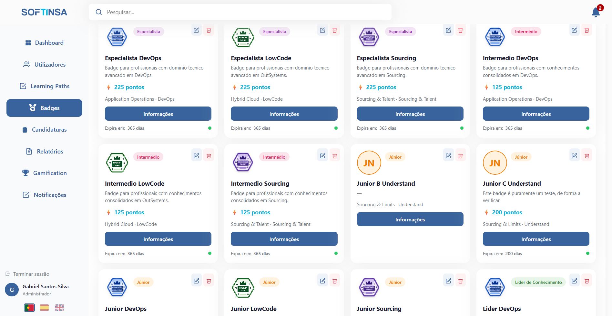

WEB PLATFORM
Uma plataforma centralizada para gerir o ciclo de vida dos badges e dar diferentes níveis de acesso às funções envolvidas.
- Dashboards e métricas de progresso
- Catálogo e gestão de badges
- Validação de evidências
- Gestão de utilizadores e permissões
- Relatórios e exportação de dados
- Informações e avisos